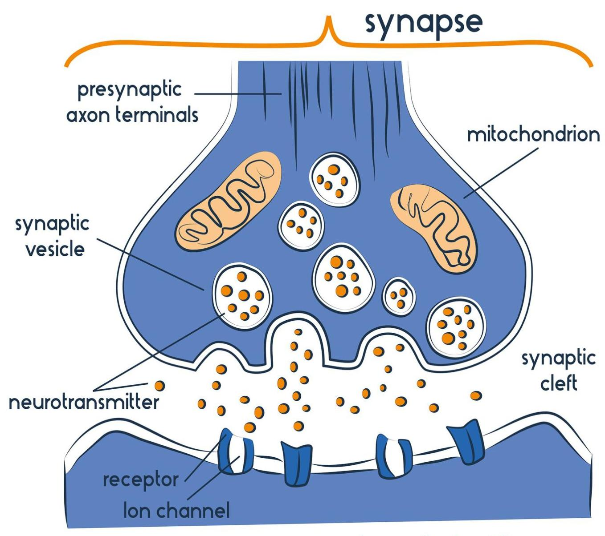
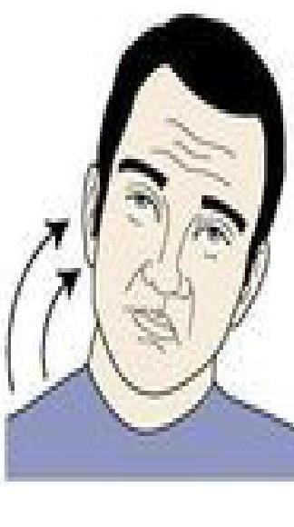
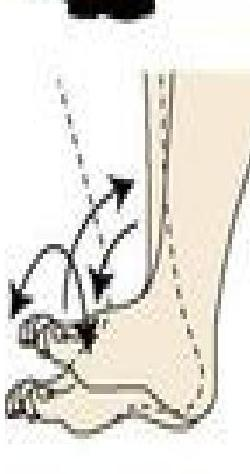
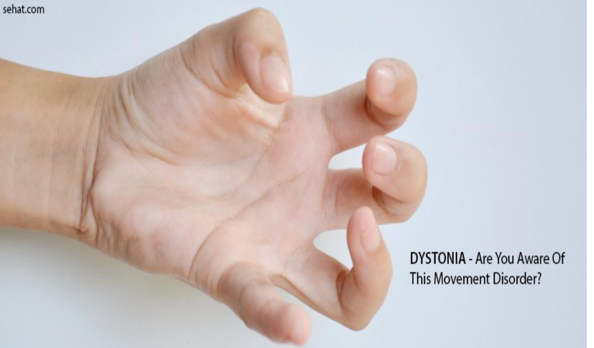
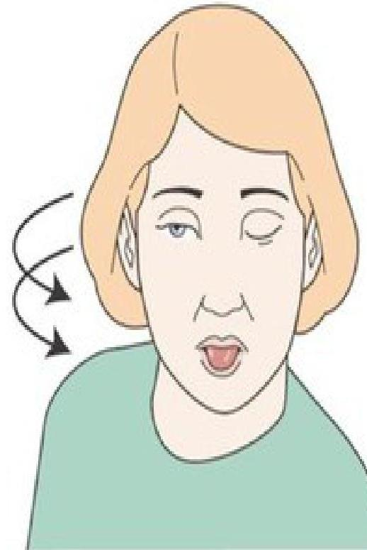

Pharmacology
Antipsychotic Agents & Lithium
- Are also called neuroleptic or major tranquilizers
- Are used primarily to treat schizophrenia
- The term "psychosis" denotes a variety of mental disorders of which Schizophrenia is the most common
- Are also effective in other psychotic states, such as manic states with psychotic symptoms (such as grandiosity or paranoia and hallucinations, and delirium)
- Schizophrenia is characterized mainly by a clear sensorium but a marked thinking disturbance
- Psychotic disorder are highly linked with abnormalities of amine neurotransmitter function, especially dopamine
- Virtually all of the drugs that act in the CNS produce their effects by modifying some step in chemical synaptic transmission
Antipsychotics Classification
They are classified into two major classes
- Typical; also called conventional or firstgeneration antipsychotics e.g. CPZ, fluphenazine: their antipsychotic effects owe their competitive blockage of dopamine receptors
- Atypical or second-generation antipsychotics; have fewer extrapyramidal adverse effects than the typical: block both serotonin and dopamine (and, perhaps, other) receptors
First generation are in 3 main groups:
- Phenothiazines e.g. chlorpromazine(T), thioridazine (T), fluphenazine(T)
- Thioxanthenes e.g. thiothixene(T)
- Butyrophenones e.g. haloperidol(T)
Second generation" or atypical drugs:
Include:
- Clozapine
- Loxapine
- Olanzapine
- Risperidone
- Quetiapine
- Ziprasidone
- Ripiprazole
- molindone
- etc
Atypical Neuroleptics
- Have fewer extrapyramidal adverse effects than the typical agents
- They block both serotonin and dopamine (and, perhaps, other) receptors
- Current antipsychotic therapy commonly employs the use of the atypical agents to minimize the risk of debilitating movement disorders associated with the typical drugs that act primarily at the \(\mathrm{D}_{2}\) dopamine receptor
Pharmacokinetics (PK) & Metabolism
- Most are readily but incompletely absorbed
- Their absorption is not affected by food
- Many of these drugs undergo significant first-pass metabolism
- Bioavailability: varying; e.g. chlorpromazine (CPZ) is \(25 \% ; 35 \%\) for Thioridazine; and \(65 \%\) for haloperidol
- Most are highly lipid-soluble and protein-bound \((92-99 \%)\)
- Bind well to plasma proteins
- Have large volumes of distribution
- Have a very high affinity for selected receptors in the CNS, hence a prolonged occupancy of dopamine \(D_{2}\) receptors ; therefore have a much longer clinical duration of action than would be estimated from their plasma half-lives
- Metabolites of chlorpromazine may be excreted in the urine weeks after the last dose of chronically administered drug
- Full relapse of psychotic symptoms may not occur until 6 weeks or more after discontinuation of many antipsychotic drugs
METABOLISM
- Most antipsychotic drugs are almost completely metabolized
- Some metabolites retain activity, e.g, CPZ and haloperidol) but are not considered to be highly important to the action of these drugs; Except the major metabolite of thioridazine (mesoridazine) which is more potent than the parent compound
- Some are excreted unchanged
Pharmacodynamics (Pd)
-
MOA: All neuroleptic drugs decrease dopamine neurotransmission
Dopamine - 5 classes of dopamine receptors \(\left(D_{1}\right.\) to \(\left.D_{5}\right)\) - Atypical agents exert part of their action through inhibition of serotonin receptors; particularly \(5-\mathrm{HT}_{2 \mathrm{~A}}\) (block dopamine as well)
- \(\mathrm{D}_{1}\) and \(\mathrm{D}_{5}\) receptors activate adenylyl cyclase, often exciting neurons
- Whereas \(\mathrm{D}_{2}, \mathrm{D}_{3}\) and \(\mathrm{D}_{4}\) receptors inhibit adenylyl cyclase, or mediate membrane \(\mathrm{K}^{+}\) channel opening leading to neuronal hyperpolarization
- The neuroleptic drugs bind to these receptors to varying degree
- Typical neuroleptic drugs block \(\mathrm{D}_{2}\) receptors in the mesolimbic system of the brain
- Atypical drug clozapine has higher affinity for the \(D_{4}\) receptor and lower affinity for the \(D_{2}\) receptor, (may partially explain its minimal ability to cause extrapyramidal side effects)
Actions of Antipsychotics
- Antipsychotic actions: All of the neuroleptic drugs can reduce the hallucinations and delusions associated with schizophrenia by blocking dopamine receptors in the mesolimbic system of the brain
- Extrapyramidal effects: Dystonias (sustained contraction of muscles leading to twisting distorted postures), parkinson-like symptoms, akathisia (motor restlessness), and tardive dyskinesia (involuntary movements of the tongue, lips, neck, trunk, and limbs) occur with chronic treatment
- Blocking of dopamine receptors in the nigrostriatal pathway mainly the cause
- Atypical neuroleptics exhibit a lower incidence of these symptoms.
- Antiemetic effects: With the exceptions of aripiprazole and thioridazine most neuloleptic drugs have antiemetic effects; mediated by blocking \(\mathrm{D}_{2}\)-dopaminergic receptors of the chemoreceptor trigger zone of the medulla
-
Antimuscarinic effects: Some of the neuroleptics, particularly thioridazine, chlorpromazine, clozapine, and olanzapine produce anticholinergic effects including:
- Blurred vision
- Dry mouth (except clozapine that increase salivation)
- Confusion
- Inhibit gastrointestinal smooth muscle, leading to constipation
- Inhibit smooth muscles of the urinary tract, leading to urinary retention
- Endocrine and Metabolic Effects: In the pituitary, neuroleptics block \(\mathrm{D}_{2}\) receptors, leading to an increase in prolactin release; gynecomastia, the amenorrhea-galactorrhea syndrome, and infertility: Less likely with the atypical neuroleptics
-
Other effects:
- Orthostatic hypotension
- Light-headedness
- Alter temperature-regulating mechanisms and can produce poikilothermia (body temperature varies with the environment)
- Sedation occurs with those drugs that are potent antagonists of the \(\mathrm{H}_{1}\)-histamine like chlorpromazine, olanzapine, quetiapine, and clozapine.
- Sexual dysfunction may also occur
Therapeutic Uses
-
Treatment of schizophrenia: Typical neuroleptics are most effective in treating positive symptoms of schizophrenia; delusions, hallucinations, thought processing, and agitation
- Atypical antipsychotics are especially useful in treating patients with the negative symptoms of schizophrenia (social withdrawal, blunted emotions, ambivalence -simultaneous conflicting reactions, and reduced ability to relate to people
- Clozapine is reserved for the treatment of individuals who are unresponsive to other neuroleptics, because its use is associated with blood dyscrasias and other severe adverse effects
-
Prevention of severe nausea and vomiting: The typical neuroleptics (prochlorperazine being the most commonly used) are useful in the treatment of drug-induced nausea
- Nausea arising from motion should be treated with sedatives, antihistamines, and anticholinergics, however, rather than with the powerful neuroleptic drugs
- Note: Transdermal scopolamine is a drug of choice for treatment of motion sickness
- Can be used as tranquilizers to manage agitated and disruptive behavior secondary to other disorders
- Used in combination with narcotic analgesics for treatment of chronic pain with severe anxiety
- Chlorpromazine is used to treat intractable hiccups
- Promethazine is not a good antipsychotic drug; however, this agent is used in treating pruritus because of its antihistaminic properties
- Risperidone and haloperidol are commonly prescribed for tic (repetitivemovements /unwanted sounds) disorder.
- Risperidone is approved for the management of disruptive behavior and irritability secondary to autism
ADRs and Cautions
Adverse Drug Reactions (ADRs)
- Sexual dysfunction
- Urine retention
- Constipation
- Postural hypotension
- Confusion
- Tremors
- Sedation
- Tardive dyskinesia with long-term treatment with neuroleptics; Patients display involuntary movements, including lateral jaw movements and fly-catching motions of the tongue.
Symptoms may diminish or disappear within a few months of taking a holiday from use of the drugs; irreversible in many individuals and persists even after discontinuation of therapy - Neuroleptic malignant syndrome: This potentially fatal ; characterized by muscle rigidity, fever, altered mental status and stupor, unstable blood pressure, and myoglobinemia.
Treated by discontinuation of the neuroleptic and supportive therapy: Administration of dantrolene or bromocriptine may be helpful. - Visual impairment caused by retinal deposits has occurred with thioridazine
- At high doses, thioridazine may also cause severe conduction defects in the heart resulting in fatal ventricular arrhythmias
- Most of the atypicals, especially quetiapine and ziprasidone, prolong the QT interval of the electrocardiogram (ECG); the underlying myocardial effect could lead to cardiac arrhythmias in some patients.
- Clozapine causes a small but important (1–2%) incidence of agranulocytosis and at high doses has caused seizures.
Cautions and Contraindications
- Neuroleptics may aggravate acute agitation that accompany withdrawal from alcohol or other drugs: Stabilization can be done with a simple sedative, such as a benzodiazepine.
- All antipsychotics may lower seizure threshold and chlorpromazine and clozapine are contraindicated in patients with seizure disorders
- Neuroleptics can aggravate preexisting epilepsy; take caution in patients with epilepsy
- High incidence of agranulocytosis with clozapine limits its use to patients who are resistant to other drugs
- All atypical neuroleptics have increased risk of causing mortality when used in elderly patients with dementia-related behavioural disturbances and psychosis
Lithium
- Effective in treatment of the manic phase of bipolar disorder
- Also used for acute-phase illness and for prevention of recurrent manic and depressive episodes
Pharmacokinetics (Pk)
- Absorption is rapid and complete from the gut
- It is distributed throughout the body water
- Cleared by the kidneys (at a rate one fifth that of creatinine)
- The half-life of lithium is about 20 h .
- Plasma levels should be monitored, especially during the first weeks of therapy, to establish an effective and safe dosage regimen
- Plasma levels of the drug may be altered by changes in body water
- Dehydration, or treatment with thiazides, nonsteroidal anti-inflammatory drugs (NSAIDs), angiotensin-converting enzyme inhibitors (ACEIs), and loop diuretics, may result in an increase of lithium in the blood to toxic levels
- Caffeine and theophylline increase the renal clearance of lithium
Mechanism of Action (MOA)
- Inhibits post synaptic D2 receptor supersensitivity
- Influences re-uptake of serotonin or norepinephrine
Clinical uses
- Treatment of bipolar disorder (manic-depressive disease
- Maintenance therapy with lithium decreases manic behavior and reduces both the frequency and the magnitude of mood swings
- Antipsychotic agents and/or benzodiazepines are commonly required at the initiation of treatment because both lithium and valproic acid have a slow onset of action
- Lithium has protective effects against suicide and self-harm; monotherapy with antidepressants can precipitate mania in bipolar patients
Toxicity
- Adverse neurologic effects of lithium include tremor, sedation, ataxia, and aphasia.
- Thyroid enlargement may occur, but hypothyroidism is rare.
- Reversible nephrogenic diabetes insipidus occurs commonly at therapeutic drug levels.
- Edema is a common adverse effect of lithium therapy;
- Acneiform skin eruptions occur;
- Leukocytosis is always present
- Use during pregnancy is thought to increase the incidence of congenital cardiac anomalies (Ebstein's anomaly).
- Teratogenic risk is low, but it is contribute to low Apgar scores in the neonate; Consequently, lithium should be withheld 24–48 h before delivery, and its use is contraindicated in nursing mothers.
Other Drugs Used in Bipolar Disorder
- Several antiseizure drugs are used in bipolar disorder
- Valproic acid has antimanic effects equivalent to those of lithium;may be effective in patients who fail to respond to lithium, and in some instances it has been used in combination with lithium
- The antiseizure drugs carbamazepine and lamotrigine are also used both in acute mania and for prophylaxis in the depressive phase
Clinical & Nursing Management
Psychosis
- Refers to loosing contact with reality and occurs in various psychiatric disorders
- Present with impaired thinking and processing information, delusions, hallucination, aggressive and violent behavior and disorganized speech
- Schizophrenia (with positive or negative symptoms) -is the most common psychotic condition
- Other causes of psychosis - bipolar, major depression, post traumatic stress, substance use disorders, head injury, medical conditions
Pathophysiology of psychosis
Imbalanced brain neurotransmitters theory
- Important brain neurotransmitters for maintaining thoughts, moods, behavior and speech Dopamine, serotonin, glutamate, gammaaminobutyric acid (GABA)
- Dopamine - dopamine sends signals for movement, memory, motivation, pleasure, cognition, behavior, attention, sleep, mood. High levels lead to euphoria and exaggerated behavior. Major cause of psychosis is excess dopamine acting on D2 receptors

- Serotonin – regulates mood, normal levels enable one to feel good, emotionally stable and calm – low levels cause anxiety, depression, suicide
- Glutamate – is an excitatory neurotransmitter enhancing nerve signal transmission in the brain
- GABA – inhibitory neurotransmitters (block nerve signals) they calm brain activity and promote good mood and prevent overexcitation by dopamine, epinepherine and norepinepherine
- Noradrenaline – controls cognition and alertness
Classification of Antipsychotics
Typical (1st Generation antipsychotics)
| phenothiazenes | Nonphenothiazines |
|---|---|
| Chlorpromazine (lagarctil) | Haloperidol (haldol) high potency |
| Triflupromazine | Loxapine |
| Fluphenazine - high potency | Molindone |
| Perphenazine | Thiothixene - high potency |
| Sulpride | |
| Thioridazine |
Mechanisms of Action of typical antipsychotics
- Act by Blocking dopamine receptors (D2) thus reducing the effects of dopamine in the brain.
- Dopamine blockage decreases psychotic symptoms.
- Because dopamine is important in muscle coordination and movement, Blockage of dopamine results in movement disorders known as Extrapyramidal syndrome as an adverse effect.
Atypical (2\(^{\text {nd }}\) Generation antipsychotics)
Clozapine - low potency, Olanzapine, Quietapine, Risperidone - low potency, ziprasidone, Aripiprazole
Mechanisms of Action of atypical antipsychotics
- Atypical antipsychotic agents block both serotonin (5HT2 receptors) and dopamine (D2 and D4) receptors
- They rapidly dissociate (detach) from D2 receptors allowing normal dopamine transmission.
- Results in less side effects - cognitive deficits and extrapyramidal syndrome are unlikely
- Considered safer than typical antipsychotics
Indications of antipsychotics
- Acute psychotic behavior - violent or aggressive
- Typical antipsychotic agents - treat the positive symptoms of schizophrenia such as hallucinations, delusions - Do not improve negative symptoms
- Atypical antipsychotic agents - effective in treating both positive and negative symptoms of schizophrenia(e.g.flat affect, withdrawal difficulty thinking)
- Bipolar disorder (manic)
- Attention deficit hyperactivity disorder
- Dementia
- Generalized anxiety disorder
- Obsessive-compulsive disorders
- Post traumatic stress disorder
- Substance use induced psychosis
Side effects of antipsychotics
- Hypersensitivity/allergic reactions
- Anticholinergic effects - dopamine suppresses acetylcholine - dry mouth, tachycardia, urine retention, constipation
- Metabolic effects like weight gain, hyperglycemia, hyperlipidemia
- Hypotension, especially after IM injections with typical antipsychotics.
- Photosensitivity (especially with typicals - Thorazine), darkening of the skin (hyperpigmentation)- sun protection measures
Extra Pyramidal Syndrome (EPS)
EPS results from inhibition of motor signals in the brain due to dopamine suppression. Occurs with typical antipsychotics: Occur 1-10wks of Rx. Client developes:
- Drug-induced parkinsonism (pseudo-parkinsonism) (1-8wks) –muscle weakness, shuffling gait, drooling, fatigue, mask-like facial expression, tremors and muscle rigidity
- Akinesia - lack of body movement especially arms due to muscle weakness.
- Akathisia - agitation and motor restlessness
Pseudo-parkinsonism
- Stooped posture
- Shuffling gait
- Rigidity
- Bradykinesia
- Tremors at rest
- Pill-rolling motion of the hand

Acute dystonia
- Facial grimacing
- Involuntary upward eye movement
- Muscle spasms of tongue, face, neck, and back (back muscle spasms cause trunk to arch forward)
- Laryngeal spasms

Akathisia
- Restless
- Trouble standing still
- Paces the floor
- Feet in constant motion, rocking back and forth

Tardive dyskinesia
- Protrusion and rolling the tongue
- Sucking and smacking movements of the lips
- Chewing motion
- Facial dyskinesia
- Involuntary movements of the body and extremities


Nurse's Responsibility
Patient Care Instructions
- Instruct the patient to take sips of water/ mouth wash/gum frequently to relieve dryness of mouth.
- A high-fiber diet, increased fluid intake and laxatives if needed, help to reduce constipation.
- Advise the patient to get up from the bed or chair very slowly (orthostatic hypotension)
- Check BP before and after medication is given as a measure to prevent falls from orthostatic hypotension.
- Instruct the patient not to alter the dose without first discussing it with the doctor.
- Giving the entire dose at bedtime (drowsing)
- Patient should be warned about driving a car or operating machinery when treatment starts.
- Take all seizure precautions.
- Administer anti-parkinsonian drugs for management of extrapyramidal syndrome.
NB: Adjusting the dosage of antipsychotic drugs, and giving anti-parkinsonian drugs can be effective in mx. of side effects
Antiparkinson Agents (Anticholinergics) for EPS Management
MOA - the drugs lower acetylcholine levels in the brain creating a balance between dopamine and acetylcholine neurotransmitters
Effect - Decreases symptoms of antipsychotic drug induced parkinsonism and other extrapyramidal symptoms.
Anti-parkinson drugs include:
- Trihexyphenidyl (Artane)
- Biperiden
- Benztropine
- Pramipexole (Mirapex)